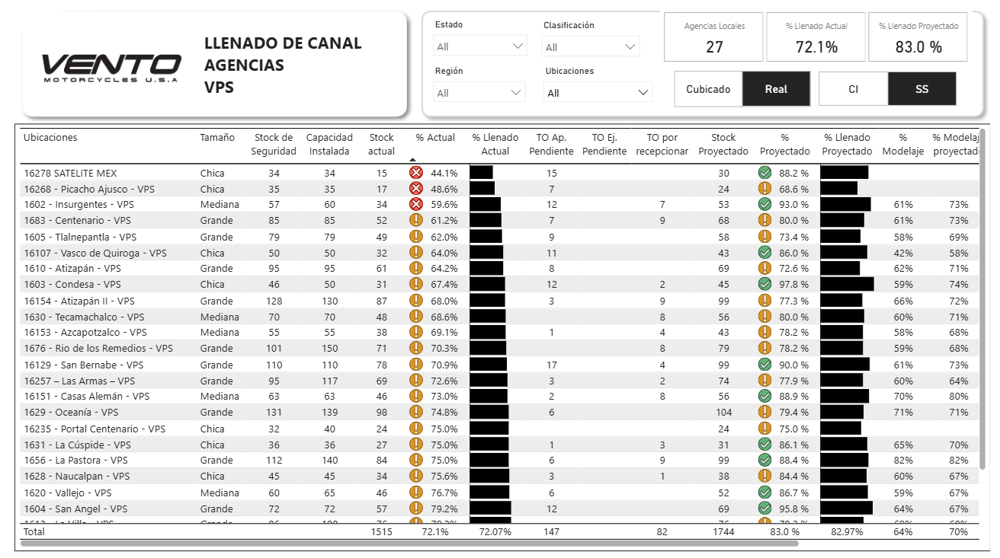
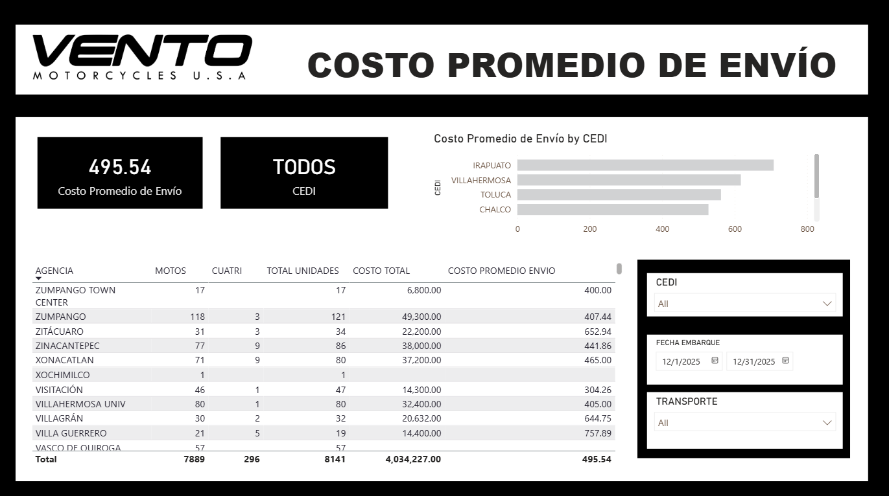
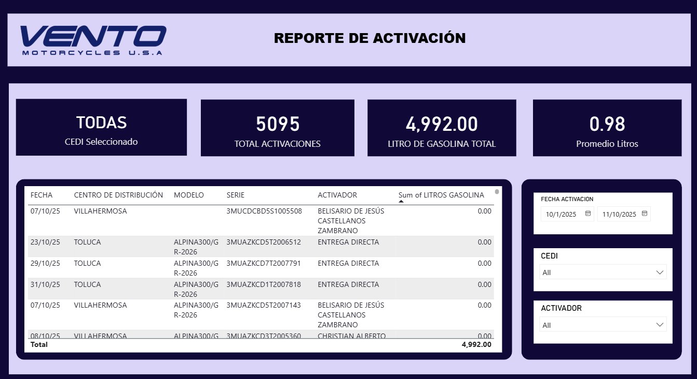
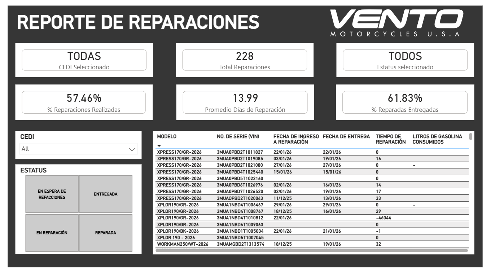
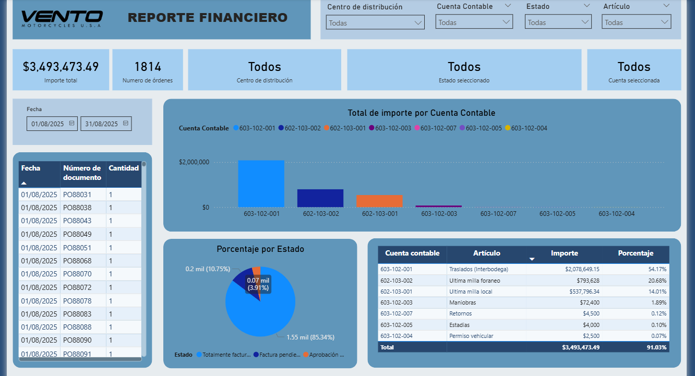

Reporte que permite monitorear, controlar y anticipar el nivel de inventario (llenado de canal) en las agencias.
Visualizar reporte
Reporte que permite visualizar controlar los costos logísticos por agencia.
Visualizar reporte
Reporte que permite revisar la cantidad de órdenes de venta (SO) y su estatus, con la finalidad de darle seguimiento a los días de atraso de las unidades.
Visualizar reporte
Reporte que permite revisar la cantidad de órdenes de traslado (TO) asi como al estatus en las que se encuentran.
Visualizar reporte
Reporte que permite revisar la cantidad de órdenes de compra (PO) y el estatus en el que se encuentra.
Visualizar reporte
Reporte que permite visualizar las activaciones de cada centro de distribución.
Visualizar reporte
Reporte que permite evaluar la eficiencia del proceso de reparación.
Visualizar reporte
Reporte que permite conocer el gasto mensual de las órdenes de compra (PO).
Visualizar reporte